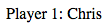
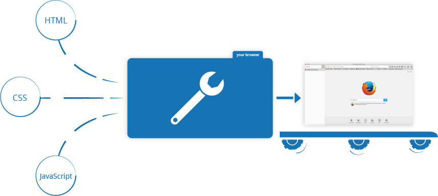

Welcome to the MDN beginner's JavaScript course! In this first article we will look at JavaScript from a high level, answering questions such as "what is it?", and "what is it doing?", and making sure you are comfortable with JavaScript's purpose.
| Prerequisites: | Basic computer literacy, a basic understanding of HTML and CSS. |
|---|---|
| Objective: | To gain familiarity with what JavaScript is, what it can do, and how it fits into a web site. |
A high-level definition
JavaScript is a programming language that allows you to implement complex things on web pages — every time a web page does more than just sit there and display static information for you to look at — displaying timely content updates, or interactive maps, or animated 2D/3D graphics, or scrolling video jukeboxes, etc. — you can bet that JavaScript is probably involved. It is the third layer of the layer cake of standard web technologies, two of which (HTML and CSS) we have covered in much more detail in other parts of the Learning Area.

- HTML is the markup language that we use to structure and give meaning to our web content, for example defining paragraphs, headings, and data tables, or embedding images and videos in the page.
- CSS is a language of style rules that we use to apply styling to our HTML content, for example setting background colors and fonts, and laying out our content in multiple columns.
- JavaScript is a programming language that enables you to create dynamically updating content, control multimedia, animate images, and pretty much everything else. Ok, not everything, but it is amazing what you can achieve with a few lines of JavaScript code.
The three layers build on top of one another nicely. Let's take a simple text label as an example. We can mark it up using HTML to give it structure and purpose:
<p>Player 1: Chris</p>

Then we can add some CSS into the mix to get it looking nice:
p {
font-family: 'helvetica neue', helvetica, sans-serif;
letter-spacing: 1px;
text-transform: uppercase;
text-align: center;
border: 2px solid rgba(0,0,200,0.6);
background: rgba(0,0,200,0.3);
color: rgba(0,0,200,0.6);
box-shadow: 1px 1px 2px rgba(0,0,200,0.4);
border-radius: 10px;
padding: 3px 10px;
display: inline-block;
cursor:pointer;
}

And finally, we can add some JavaScript to implement dynamic behaviour:
var para = document.querySelector('p');
para.addEventListener('click', updateName);
function updateName() {
var name = prompt('Enter a new name');
para.textContent = 'Player 1: ' + name;
}
Try clicking on the text label to see what happens (note also that you can find this demo on GitHub — see the source code, or run it live)!
JavaScript can do a lot more than that — let's explore what in more detail.
So what can it really do?
The core JavaScript language consists of some common programming features that allow you to do things like:
- Store useful values inside variables. In the above example for instance, we ask for a new name to be entered then store that name in a variable called
name. - Operations on pieces of text (known as "strings" in programming). In the above example we take the string "Player 1: " and join it to the
namevariable to create the complete text label, e.g. ''Player 1: Chris". - Running code in response to certain events occurring on a web page. We used a
clickevent in our example above to detect when the button is clicked and then run the code that updates the text label.) - And much more!
What is even more exciting however is the functionality built on top of the core JavaScript language. So-called Application Programming Interfaces (APIs) provide you with extra superpowers to use in your JavaScript code. They generally fall into two categories.

Browser APIs are built into your web browser, and are able to expose data from the surrounding computer environment, or do useful complex things. For example:
- The DOM (Document Object Model) API allows you to manipulate HTML and CSS, creating, removing and changing HTML, dynamically applying new styles to your page, etc. Everytime you see a popup window appear on a page, or some new content displayed (as we saw above in our simple demo) for example, that's the DOM in action.
- The Geolocation API retrieves geographical information. This is how Google Maps is able to find your location, and plot it on a map.
- The Canvas and WebGL APIs allow you to create animated 2D and 3D graphics. People are doing some amazing things using these web technologies —see Chrome Experiments and webglsamples.
- Audio and Video APIs like
HTMLMediaElementand WebRTC allow you to do really interesting things with multimedia, such as play audio and video right in a web page, or grab video from your web camera and display it on someone else's computer (try our simple Snapshot demo to get the idea).
Note: Many of the above demos won't work in a older browser — when experimenting, it's a good idea to use a modern browser like Firefox, Chrome, Edge or Opera to run your code in. You will need to consider cross browser testing in more detail when you get closer to delivering production code (i.e. real code that real customers will use).
Third party APIs are not built into the browser by default, and you generally have to grab their code and information from somewhere on the Web. For example:
- The Twitter API allows you to do things like displaying your latest tweets on your website.
- The Google Maps API allows you to embed custom maps into your website, and other such functionality.
Note: These APIs are advanced, and we'll not be covering any of these in this course, but the above links provide extensive documentation if you are interested in finding out more.
There's a lot more available, too! However, don't get over excited just yet. You won't be able to build the next Facebook, Google Maps or Instagram after studying JavaScript for 24 hours — there's a lot of basics to cover first. And that's why you're here — let's move on!
What is JavaScript doing on your page?
Here we'll start actually looking at some code, and while doing so explore what actually happens when you run some JavaScript in your page.
Let's briefly recap the story of what happens when you load a web page in a browser (first talked about in our How CSS works article). When you load a web page in your browser, you are running your code (the HTML, CSS, and JavaScript) inside an execution environment (the browser tab). This is like a factory that takes in raw materials (the code) and outputs a product (the web page).

The JavaScript is executed by the browser's JavaScript engine, after the HTML and CSS have been assembled and put together into a web page. This ensures that the structure and style of the page are already in place by the time the JavaScript starts to run.
This is a good thing, as a very common use of JavaScript is to dynamically modify HTML and CSS to update a user interface, via the Document Object Model API (as mentioned above). If the JavaScript loaded and tried to run before the HTML and CSS was there to affect, then errors would occur.
Browser security
Each browser tab is its own separate bucket for running code in (these buckets are called "execution environments" in technical terms) — this means that in most cases the code in each tab is run completely separately, and the code in one tab cannot directly affect the code in another tab — or on another website. This is a good security measure — if this were not the case, then pirates could start writing code to steal information from other websites, and other such bad things.
Note: There are ways to send code and data between different websites/tabs in a safe manner, but these are advanced techniques that we won't cover in this course.
JavaScript running order
When the browser encounters a block of JavaScript, it generally runs it in order, from top to bottom. This means that you need to be careful what order you put things in. For example, let's return to the block of JavaScript we saw in our first example:
var para = document.querySelector('p');
para.addEventListener('click', updateName);
function updateName() {
var name = prompt('Enter a new name');
para.textContent = 'Player 1: ' + name;
}
Here we are selecting a text paragraph (line 1), then attaching an event listener to it (line 3) so that when the paragraph is clicked, the updateName() code block (lines 5–8) is run. The updateName() code block (these types of reusable code block are called "functions") asks the user for a new name, and then inserts that name into the paragraph to update the display.
If you swapped the order of the first two lines of code, it would no longer work — instead, you'd get an error returned in the browser developer console — TypeError: para is undefined. This means that the para object does not exist yet, so we can't add an event listener to it.
Note: This is a very common error — you need to be careful that the objects referenced in your code exist before you try to do stuff to them.
Interpreted versus compiled code
You might hear the terms interpreted and compiled in the context of programming. JavaScript is an interpreted language — the code is run from top to bottom and the result of running the code is immediately returned. You don't have to transform the code into a different form before the browser runs it.
Compiled languages on the other hand are transformed (compiled) into another form before they are run by the computer. For example C/C++ are compiled into assembly language that is then run by the computer.
Both approaches have different advantages, which we won't discuss at this point.
Server-side versus client-side code
You might also hear the terms server-side and client-side code, specially in the context of web development. Client-side code is code that is run on the user's computer — when a web page is viewed, the page's client-side code is downloaded, then run and displayed by the browser. In this JavaScript module we are explicitly talking about client-side JavaScript.
Server-side code on the other hand is run on the server, then its results are downloaded and displayed in the browser. Examples of popular server-side web languages include PHP, Python, Ruby, and ASP.NET. And JavaScript! JavaScript can also be used as a server-side language, for example in the popular Node.js environment — you can find more out about server-side JavaScript in our Dynamic Websites – Server-side programming topic.
The word dynamic is used to describe both client-side JavaScript, and server-side languages — it refers to the ability to update the display of a web page/app to show different things in different circumstances, generating new content as required. Server-side code dynamically generates new content on the server, e.g. pulling data from a database, whereas client-side JavaScript dynamically generates new content inside the browser on the client, e.g. creating a new HTML table, inserting data requested from the server into it, then displaying the table in a web page shown to the user. The meaning is slightly different in the two contexts, but related, and both approaches (server-side and client-side) usually work together.
A web page with no dynamically updating content is referred to as static — it just shows the same content all the time.
How do you add JavaScript to your page?
JavaScript is applied to your HTML page in a similar manner to CSS. Whereas CSS uses <link> elements to apply external stylesheets and <style> elements to apply internal stylesheets to HTML, JavaScript only needs one friend in the world of HTML — the <script> element. Let's learn how this works.
Internal JavaScript
- First of all, make a local copy of our example file apply-javascript.html. Save it in a directory somewhere sensible.
- Open the file in your web browser and in your text editor. You'll see that the HTML creates a simple web page containing a clickable button.
- Next, go to your text editor and add the following just after your closing
</body>tag:<script> // JavaScript goes here </script>
- Now we'll add some JavaScript inside our
<script>element to make the page do something more interesting — add the following code just below the "// JavaScript goes here" line:function createParagraph() { var para = document.createElement('p'); para.textContent = 'You clicked the button!'; document.body.appendChild(para); } var buttons = document.querySelectorAll('button'); for(var i = 0; i < buttons.length ; i++) { buttons[i].addEventListener('click', createParagraph); } - Save your file and refresh the browser — now you should see that when you click the button, a new paragraph is generated and placed below.
Note: If your example doesn't seem to work, go through the steps again and check that you did everything right. Did you save your local copy of the starting code as a .html file? Did you add your <script> element just after the </body> tag? Did you enter the JavaScript exactly as shown? JavaScript is case sensitive, and very fussy, so you need to enter the syntax exactly as shown, otherwise it may not work.
Note: You can see this version on GitHub as apply-javascript-internal.html (see it live too).
External JavaScript
This works great, but what if we wanted to put our JavaScript in an external file? Let's explore this now.
- First, create a new file in the same directory as your sample HTML file. Call it
script.js— make sure it has that .js filename extension, as that's how it is recognized as JavaScript. - Next, copy all of the script out of your current
<script>element and paste it into the .js file. Save that file. - Now replace your current
<script>element with the following:<script src="script.js"></script>
- Save and refresh your browser, and you should see the same thing! It works just the same, but now we've got the JavaScript in an external file. This is generally a good thing in terms of organizing your code, and making it reusable across multiple HTML files. Plus the HTML is easier to read without huge chunks of script dumped in it.
Note: You can see this version on GitHub as apply-javascript-external.html and script.js (see it live too).
Inline JavaScript handlers
Note that sometimes you'll come across bits of actual JavaScript code living inside HTML. It might look something like this:
function createParagraph() {
var para = document.createElement('p');
para.textContent = 'You clicked the button!';
document.body.appendChild(para);
}
<button onclick="createParagraph()">Click me!</button>
You can try this version of our demo below.
This demo has exactly the same functionality as in the previous two sections, except that the <button> element includes an inline onclick handler to make the function run when the button is pressed.
Please don't do this, however. It is bad practice to pollute your HTML with JavaScript, and it is inefficient — you'd have to include the onclick="createParagraph()" attribute on every button you wanted the JavaScript to apply to.
Using a pure JavaScript construct allows you to select all the buttons using one instruction. The code we used above to serve this purpose looks like this:
var buttons = document.querySelectorAll('button');
for(var i = 0; i < buttons.length ; i++) {
buttons[i].addEventListener('click', createParagraph);
}
This might look a bit longer than the onclick attribute, but this will work for all buttons no matter how many are on the page, and how many are added or removed. The JavaScript does not need to be changed.
Note: Try editing your version of apply-javascript.html and add a few more buttons into the file. When you reload, you should find that all of the buttons when clicked will create a paragraph. Neat, huh?
Comments
As with HTML and CSS, it is possible to write comments into your JavaScript code that will be ignored by the browser, and exist simply to provide instructions to your fellow developers on how the code works (and you, if you come back to your code after 6 months and can't remember what you did). Comments are very useful, and you should use them often, particularly for larger applications. There are two types:
- A single line comment is written after a double forward slash (//), e.g.
// I am a comment
- A multi-line comment is written between the strings /* and */, e.g.
/* I am also a comment */
So for example, we could annotate our last demo's JavaScript with comments like so:
// Function: creates a new paragraph and append it to the bottom of the HTML body.
function createParagraph() {
var para = document.createElement('p');
para.textContent = 'You clicked the button!';
document.body.appendChild(para);
}
/*
1. Get references to all the buttons on the page and sort them in an array.
2. Loop through all the buttons and add a click event listener to each one.
When any button is pressed, the createParagraph() function will be run.
*/
var buttons = document.querySelectorAll('button');
for(var i = 0; i < buttons.length ; i++) {
buttons[i].addEventListener('click', createParagraph);
}
Summary
So there you go, your first step into the world of JavaScript. We've begun with just theory, to start getting you used to why you'd use JavaScript, and what kind of things you can do with it. Along the way you saw a few code examples and learned how JavaScript fits in with the rest of the code on your website, amongst other things.
JavaScript may seem a bit daunting right now, but don't worry — in this course we will take you through it in simple steps that will make sense going forward. In the next article we will plunge straight into the practical, getting you to jump straight in and build your own JavaScript examples.